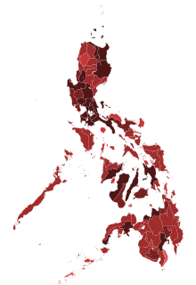
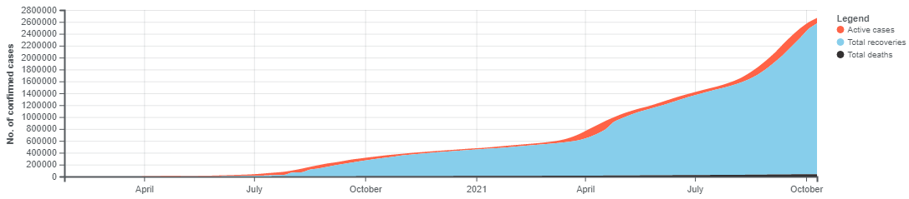

Total recorded cases as of October 15, 2021: 2,698,232
Highest amount of cases in a single day: September 11, 2021(26,303 cases)
Recovered: 2,586,369
Reported deaths: 40,000
Fully Vaccinated: 23,981,240
More Information & Updates
Metro Manila is currently in Alert Level 3 until October 31, 2021
The government plans to achieve a 70% vaccination rate for the eligible population by February of 2022.
According to the Octa Research Group, all 17 LGU’s in NCR are now at moderate risk.
According to DOH, COVID-19 cases are declining, but there are still 3 regions at high risk.
Children aged 12 and older can now get vaccinated.
Philippines Case Map

Map of provinces (including Metro Manila) with confirmed cases (as of October 16, 2021)
Progression Chart of Cases in The Philippines

For more iformation and updated news on COVID-19 in The Philippines, you can refer to the ABS-CBN news youtube channel
Hariboneagle927. (2019). Covid-19 pandemic cases in the Philippines. Philippine Star. Retrieved October 20, 2021,
from https://twitter.com/PhilippineStar/status/1221686520962113537.
Magsambol, B. (2021, October 14). OCTA research: All Metro Manila Cities now at 'moderate risk' for covid-19.
Rappler. Retrieved October 20, 2021,
from https://www.rappler.com/nation/metro-manila-cities-covid-19-risk-status-october-14-2021.
Paris, J. (2020, January 29). Philippines now has capability to test samples for novel coronavirus – Duque. Rappler.
Retrieved October 20, 2021,
from https://www.rappler.com/nation/duque-says-philippines-now-has-capability-test-samples-novel-coronavirus.
Ranada, P. (2021, October 19). Gov't aims to vaccinate 70% of population by February election period. Rappler.
Retrieved October 20, 2021,
from https://www.rappler.com/nation/government-aims-vaccinate-70-percent-by-february-2022-election-period.
Ritchie, H., Mathieu, E., Rodés-Guirao, L., Appel, C., Giattino, C., Ortiz-Ospina, E., Hasell, J., Macdonald, B.,
Beltekian, D., & Roser, M. (2020, March 5). Philippines: Coronavirus pandemic country profile. Our World in Data
. Retrieved October 20, 2021, from https://ourworldindata.org/coronavirus/country/philippines.
Tantuco, V. (2021, October 14). List: Countries vaccinating children against COVID-19. Rappler.
Retrieved October 20, 2021,
from https://www.rappler.com/newsbreak/iq/list-countries-vaccinating-children-against-covid-19.
.png "pshs logo")